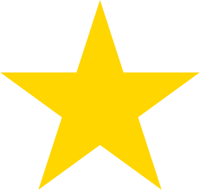

CSS Shapes позволяет создавать интересные и уникальные макеты, определяя геометрические фигуры, изображения и градиенты, вокруг которых может обтекать текстовое содержимое.
CSS Shapes позволяет определить геометрические фигуры, вокруг которых обтекает текст. Такими фигурами могут быть: круг, эллипс, простые или сложные многоугольники, а также изображения и градиенты. На практике CSS Shapes позволяет отображать круговой текст вокруг круглого аватара; выводить текст поверх части полноразмерного фонового изображения; отображать текст, обтекающий буквицы в статье.
CSS Shapes не поддерживает IE и Edge.
| shape-outside | это свойство определяет фигуры, вокруг которых может обтекать текст. Чтобы добавить свойство shape-outside к элементу, он должен быть обтекаемым, а также у него должна быть установлена высота и ширина. |
| shape-inside | это свойство определяет фигуры, внутри которых может обтекать текст. В настоящее время оно не реализовано ни в одном браузере. |
| shape-margin | добавляет поле к фигуре; значение может быть задано в px, em, % или в любой другой стандартной единице измерения CSS. |
| shape-image-threshold | определяет порог альфа-канала фигуры, другими словами, какой процент изображения будет считаться прозрачным. |
| text text text text text text text text text text text text text text text text text text text text text text text text text text text text text text text text text text text text text text text | circle() = circle(50%) |
| text text text text text text text text text text text text text text text text text text text text text text text text text text text text text text text text text text text text text text text | |
Мы можем ясно видеть обтекающий текст, но не саму фигуру элемента. Если желаем её отобразить, то нужно использовать свойство clip-path. Это свойство принимает те же значения, что и shape-outside, поэтому можем присвоить ему значение circle().
В дополнение к радиусу функция принимает позиционирование через at. Положение по умолчанию — центр круга, поэтому circle() будет явно записан как circle(50% at 50% 50%) или circle(100px at 100px 100px); значениями являются горизонтальное и вертикальное положение, соответственно.
| text text text text text text text text text text text text text text text text text text text text text text text text text text text text text text text text text text text text text text text | |
| text text text text text text text text text text text text text text text text text text text text text text text text text text text text text text text text text text text text text text text | |
| text text text text text text text text text text text text text text text text text text text text text text text text text text text text text text text text text text text text text text text | |
Разница между ellipse() и circle() заключается в том, что эллипс имеет два радиуса - rx и ry или радиус по оси X и радиус по оси Y. Поэтому приведённый выше пример можно записать в виде ellipse(75px 150px).
Параметры позиционирования одинаковы для кругов и эллипсов. Радиусы, помимо того, что они являются единицей измерения, также включают farthest-side и closest-side.
closest-side указывает на длину от центра до ближайшей стороны связанного блока и наоборот, farthest-side указывает на длину от центра до самой дальней стороны связанного блока. Эти два значения не действуют, если не установлено положение, отличное от значения по умолчанию.
Вот демонстрация разницы перестановки closest-side и farthest-side для ellipse() со смещением на 25% по осям X и Y.
w100 x h200 |
w100 x h200 |
Можно вставлять прямоугольники с внутренним отступом - через функцию inset().
Подобно свойствам padding или margin, inset() принимает значение top right bottom left по часовой стрелке inset(25px 25px 25px 25px), использование только одного значения установит все четыре стороны одинаковыми inset(25px).
inset() также может принимать параметр border-radius со значением радиуса и текст будет учитывать скруглённые уголки. В примере с 40px со всех сторон и скруглением 50px.
| text text text text text text text text text text text text text text text text text text text text text text text text text text text text text text text text text text text text text text text | |
| text text text text text text text text text text text text text text text text text text text text text text text text text text text text text text text text text text text text text text text | |
Наиболее интересной и гибкой из функций является polygon(), который может принимать массив точек x и y для создания любой сложной фигуры. Каждый элемент в массиве представляет xi yi и будет записан как polygon(x1 y1, x2 y2, x3 y3...) и т.д.
Наименьшим количеством наборов точек, которые мы можем применить к polygon(), является три, что создаёт треугольник.
Интересное использование функции polygon() заключается в том, что текстовое содержимое может располагаться между двумя или более фигурами. Поскольку фигура polygon() очень гибкая и динамичная, это одна из самых больших возможностей для создания действительно уникальных макетов в журнальном стиле. В данном примере текст находится между двумя многоугольниками.
Многоугольники можно использовать для вырезания фигур вокруг изображений или других элементов, например вокруг большой буквы.
| text text text text text text text text text text text text text text text text text text text text text text text text text text text text text text text text text text text text text text text text text text text text text text text text text text text text text text text text text text text text text text text text text text text text | |
Интересной особенностью CSS Shapes является то, что вам не всегда нужно явно определять фигуру с помощью функции. Вы также можете использовать адрес полупрозрачного изображения для определения фигуры и текст будет его автоматически обтекать.
Важно отметить, что используемое изображение должно быть CORS-совместимым (т.е. с того же сервера что и остальные файлы сайта), в противном случае вы получите ошибку подобную приведённой ниже.
В отличие от других примеров, мы будем использовать тег <img> вместо <div>. На этот раз CSS простой — просто поместите url() в свойство shape-outside, как вы бы это сделали со свойством background-image.
|  text text text text text text text text text text text text text text text text text text text text text text text text text text | видимо данный браузер не поддерживает эту функцию |
В качестве фигуры также можно использовать градиенты. Они работают как изображения, и как с изображением, которое мы использовали выше, текст будет обтекать прозрачную часть.
С градиентами мы будем использовать свойство - shape-image-threshold. Оно определяет порог альфа-канала фигуры, другими словами, какой процент изображения будет считаться прозрачным.
В примере с градиентом, который разделен на 50%/50% между цветом и прозрачностью, значение shape-image-threshold равно 0.5. Это означает, что все пиксели с непрозрачностью более 50% должны рассматриваться как часть изображения.
| text text text text text text text text text text text text text text text text text text text text text text text text text text text text text text text text text text text text text text | |